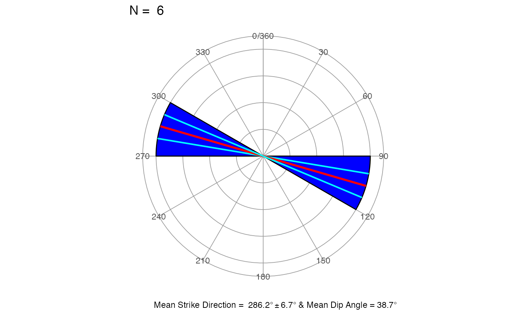
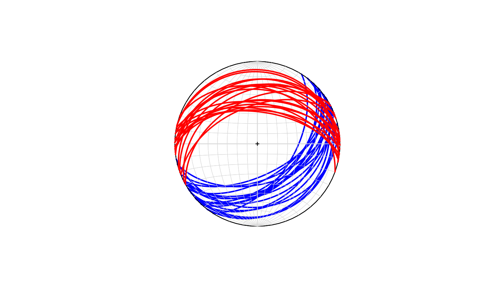
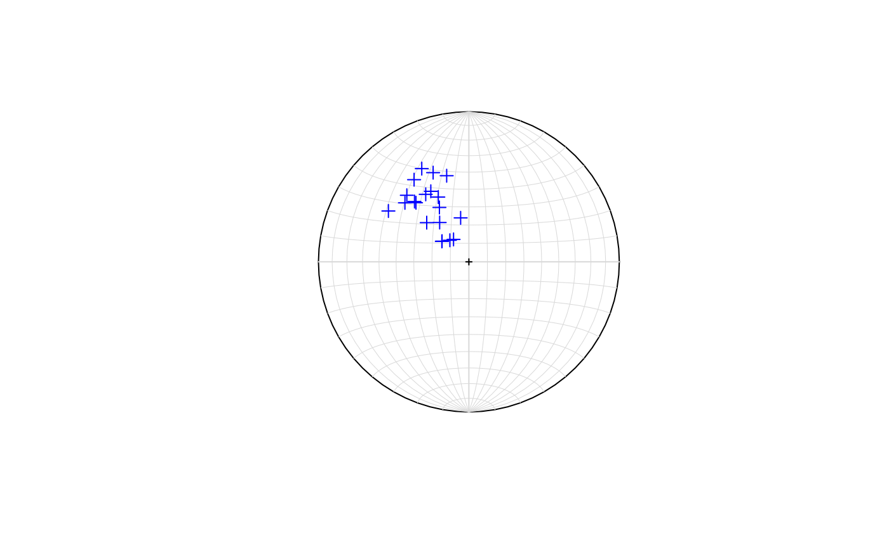
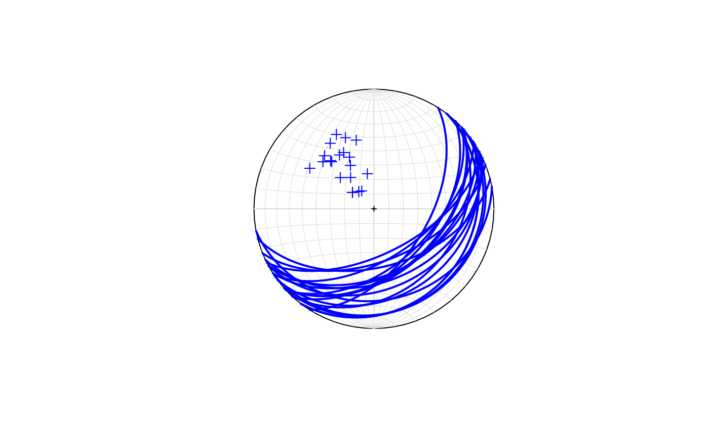
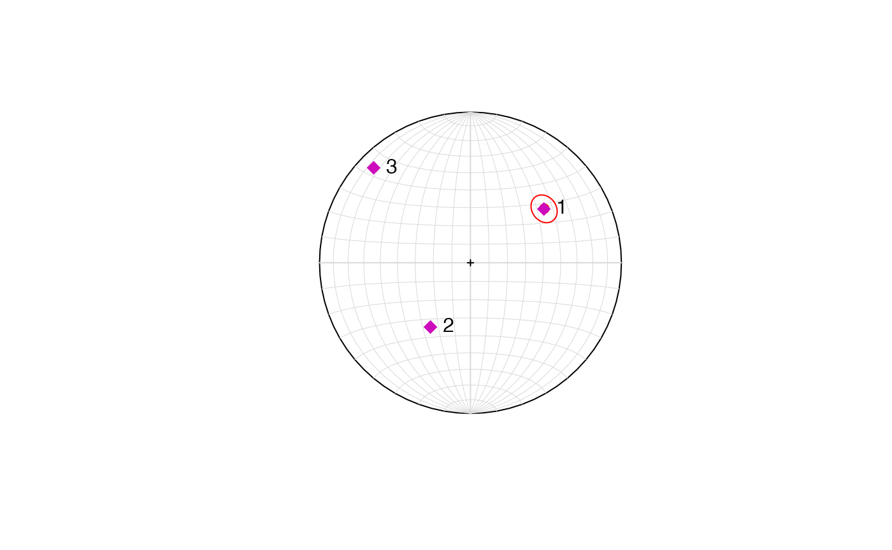

Directional statistics
Maximiliano Garnier Villarreal
2020-05-03
Source:vignettes/directional_stats_vig.Rmd
directional_stats_vig.RmdThis document highlights some functions of the GMisc package related to directional statistics and stereonets.
Directional data refers to anything that can be expressed in azimuths, with the typical convention of the north corresponding to 0 and 360 degrees, and increasing clockwise (east is 90, south is 180, west is 270).
Another characteristic of this type of data is that it can fall in one of the following categories:
- Directional: Has a specific orientation (direction), points in one direction, usually associated to lines. An example would be the dip direction.
- Non-directional: Does not have a specific orientation, points in two directions 180 degrees one from the other, usually associated with planes. An example would be the strike of a plane.
To perform proper statistics on non-directional data it is necessary to transform it before applying any calculations. It is a simple transformation by doubling each measurement, this way it goes from non-directional to directional, and now all the statistics can be applied.
Circular data
Circular data, also known as 2D, refers to data only defined by their direction and not their inclination or dip, so only one set of measurements is needed.
Basic stats
The main statistics that describe circular data are the mean direction (\(\bar{\theta}\)), mean resultant length (\(\bar{R}\)), and circular variance (\(s_0^2\)). When working with non-directional data the mean direction should be divided by 2 to transform the data back to its original form. The mean resultant length (\(\bar{R}\)) ranges between 0 and 1, and the closer to 1 the more concentrated are the data and the closer to 0 the more dispersed is the data. The circular variance (\(s_0^2\)) is the complement of the mean resultant length (\(\bar{R}\)) and its interpretation is the opposite, the closer to 1 the more variation there is in the data.
The function dir_stats_2D is used to obtain the basic statistics for circular data. Its arguments are x a vector of angular measurements in degrees, dir a switch to indicate if the data is directional (1) or non-directional (0), and conf.level to determine the desired confidence level. The result shows the mentioned statistics above, plus the concentration parameter (\(k\)), the confidence interval for the mean direction, and the general width for the cone of confidence. The concentration parameter (\(k\)) is another measure of the dispersion, the higher it is the more concentrated (less dispersed) is the data, and more likely to have a preferred mean direction.
The first example shows a set of directional data, while the second example shows a set of non-directional data.
x <- c(255, 239, 222, 231, 199, 271, 222, 274, 228, 246, 177, 199, 257, 201, 237, 209, 216) dir_stats_2D(x, dir = 1)
## Mean.Dir R Circ.Var Conc.Param Cone.lower Cone.upper Cone
## 1 228.4 0.9 0.1 5.27 215.9 240.9 12.51dir_stats_2D(carolina, dir = 0)
## Mean.Dir R Circ.Var Conc.Param Cone.lower Cone.upper Cone
## 1 48.7 0.982 0.0177 28.5 47.6 49.8 1.07Rose diagram
The typical way to present directional data is with a rose diagram, which is the equivalent of a histogram. In the case of directional data it results in an asymmetric rose diagram, while in the case of non-directional data it results in a symmetric rose diagram.
The function to plot this is rose_diag_2D, with the extra argument of width for the width in degrees of the petals (bins). The plot shows the data, the mean direction in red and the confidence interval in cyan.
rose_diag_2D(x, width = 30, dir = 1)
rose_diag_2D(carolina, width = 10, dir = 0)
Randomness test
This is a test (also known as Rayleigh’s test) to determine if the data has a preferred mean direction or it’s random. The idea is to compare the \(\bar{R}\) to a critical one \(\bar{R}_{crit}\) depending on the sample size and desired confidence level. The options for confidence level are 0.99, 0.975, 0.95, or 0.90. If the estimated \(\bar{R} > \bar{R}_{crit}\) the null hypothesis is rejected and the data has a preferred mean direction. If the estimated \(\bar{R} < \bar{R}_{crit}\) the null hypothesis is not rejected and the data follows a random pattern. The function is dir_unif_test_2D with the usual arguments. The result gives the estimated and critical mean resultant lengths and an interpretation.
dir_unif_test_2D(x, dir = 1)
## $R
## [1] 0.9
##
## $Rcrit
## [1] 0.415
##
## $interpretation
## [1] "Reject H0 and conclude that the sample has a preferred mean direction"Two-sample test
This is the homologous to the 2-sample t-test, where two sets of data are compared to determine if they have the same mean, but in this case it refers to the mean direction. The function is dir_2sample_test_2D, with the usual arguments with the addition of a second vector of measurements. The test is an F-test, comparing the critical value with the estimated value. The result gives the F-statistics, the p-value and an interpretation.
y = c(225, 208, 172, 198, 204, 183, 190, 212, 247, 127, 167, 234, 217, 192, 212, 171, 169, 210, 245, 222, 185, 227, 193, 178, 187, 182, 194, 217, 168, 211, 234, 204, 221, 198, 261, 228, 146, 201, 146, 231) dir_2sample_test_2D(x, y, dir = 1, conf.level = 0.95)
## $f
## [1] 11.5
##
## $fcrit
## [1] 4.02
##
## $p_value
## [1] 0.0013
##
## $interpretation
## [1] "Reject H0 and conclude that the two samples could not come from the same population with the same mean direction"Spherical data
Spherical data refers to data represented by two vectors: dip direction (trend) and dip angle (plunge). All of the statistics and test done in circular data are extended to spherical data, so the functions just change the last part of the name but the arguments remain the same but know giving two vectors as inputs for the data.
Basic stats
Here the difference is that a mean dip angle is returned. The confidence level applies only for the mean direction.
dir = c(12,18,22,15,10,20) dip = c(42,40,48,30,42,30) dir_stats_3D(dir, dip, conf.level = 0.95)
## Mean.Dir MeanDip R Sph.Var Conc.Param Cone.lower Cone.upper Cone
## 1 16.2 38.7 0.992 0.00821 81.2 9.5 22.8 6.68Rose diagram
In this case the arguments are az for the vector of data, that can be dip direction or strike, which has to coincide with the dir argument, 1 for dip direction or 0 for strike. The rest of the arguments are the usual ones.
dip.dir = c(12,18,22,15,10,20) strike = d2s(dip.dir) dip = c(42,40,48,30,42,30) rose_diag_3D(az = dip.dir, dip = dip, width = 30, dir = 1, conf.level = 0.95)
rose_diag_3D(az = strike, dip = dip, width = 30, dir = 0, conf.level = 0.95)

Randomness test
Similar to the circular case, it tests to see if the data has a preferred orientation or follows a random pattern. It returns again the mean resultant lengths and an interpretation.
dir_unif_test_3D(dir, dip)
## $R
## [1] 0.992
##
## $Rcrit
## [1] 0.645
##
## $interpretation
## [1] "Reject H0 and conclude that the sample has a preferred mean direction"Two-sample test
Similar as the circular case but for two sets of spherical data.
d1 = c(12,18,22,15,10,20) i1 = c(42,40,48,30,42,30) d2 = c(111.7,109.2,185.1,83.1,235.2,226.7) i2 = c(40.4,31.4,25.9,26.2,27,31.5) dir_2sample_test_3D(d1, i1, d2, i2)
## $f
## [1] 12.59
##
## $fcrit
## [1] 3.49
##
## $p_value
## [1] 0.000289
##
## $interpretation
## [1] "Reject H0 and conclude that the two samples could not come from the same population with the same mean direction and mean dip angle"Stereonets
This is a representation of data used typically in structural geology and other branches of geology. It can be useful to visualize the distribution of the data. It has the most use with spherical data although circular data can be plotted with a dip angle of zero.
Lines
Draws lines (as points) for a set of measurements. The function is stereo_lines and several sets of data can be added using the add = TRUE argument, and these can be differentiated using the points.col and points.shape arguments.
set.seed(4101) dir <- runif(min = 30, max = 80, n = 20) dip <- runif(min = 10, max = 60, n = 20) stereo_lines(dir, dip, points.shape = 3, points.col = "blue", add = FALSE)
Planes
Draws the great circles of planes on an equal area stereonet. The function is stereo_plane, and it the arguments az for the angular measurements in degrees (strike or dip directions), dip for the dip angles, dir a string indicating which direction is being given (“strike”, “dip”), col for the color of the great circles, and add to add other set of data to an existing plot.
set.seed(4101) strike <- runif(min = 30, max = 80, n = 20) dip.dir <- s2d(strike) dip <- runif(min = 10, max = 60, n = 20) strike2 <- runif(min = 240, max = 290, n = 20) dip2 <- runif(min = 10, max = 60, n = 20) stereo_plane(strike, dip) stereo_plane(dip.dir, dip, dir = "dip") stereo_plane(strike2, dip2, col = "red", add = TRUE)

Mean plane
Something that can be useful, instead of plotting all the planes, is to plot the mean plane (in this case as a point) along with its confidence cone. This is exactly the purpose of the stereo_mean function. It has the usual arguments with the specific one of mean.col for the color of the mean plane and cone.
set.seed(4101) dir <- runif(min = 30, max = 80, n = 20) dip <- runif(min = 10, max = 60, n = 20) stereo_mean(dir, dip, conf.level = 0.95, mean.col = "red", add = FALSE)

Poles
A more usual representation of planes is as poles. This is the purpose of the function stereo_pole, it draws the poles to planes (great circles) on an equal area stereonet. It has the same arguments as stereo_lines.
set.seed(4101) dip.dir <- runif(min = 120, max = 170, n = 20) dip <- runif(min = 10, max = 60, n = 20) stereo_pole(dip.dir, dip)

## $x
## [1] -0.10200913 -0.28028020 -0.12643604 -0.42510638 -0.05480389 -0.41246314
## [7] -0.19431924 -0.25304395 -0.36427339 -0.53495247 -0.17964548 -0.31319027
## [13] -0.36156410 -0.14760929 -0.17828617 -0.35167930 -0.19593629 -0.28683770
## [19] -0.23768618 -0.20341205
##
## $y
## [1] 0.1494810 0.2610787 0.1436750 0.3931486 0.2930232 0.4434575 0.2618946
## [8] 0.4699560 0.5473701 0.3387309 0.1362164 0.6210042 0.4018147 0.5737143
## [15] 0.1376045 0.3937188 0.3622885 0.4497231 0.5942134 0.4315197stereo_plane(dip.dir, dip, dir = "dip") stereo_pole(dip.dir, dip, add = TRUE)

## $x
## [1] -0.10200913 -0.28028020 -0.12643604 -0.42510638 -0.05480389 -0.41246314
## [7] -0.19431924 -0.25304395 -0.36427339 -0.53495247 -0.17964548 -0.31319027
## [13] -0.36156410 -0.14760929 -0.17828617 -0.35167930 -0.19593629 -0.28683770
## [19] -0.23768618 -0.20341205
##
## $y
## [1] 0.1494810 0.2610787 0.1436750 0.3931486 0.2930232 0.4434575 0.2618946
## [8] 0.4699560 0.5473701 0.3387309 0.1362164 0.6210042 0.4018147 0.5737143
## [15] 0.1376045 0.3937188 0.3622885 0.4497231 0.5942134 0.4315197Principal stress
Another useful set of results to obtain are the principal stresses for a set of measurements. stereo_ps adds the principal stresses, for a given set of data, to a stereonet. It enumerates the points where usually the major principal stress corresponds with the mean orientation.
set.seed(4101) dir <- runif(min = 30, max = 80, n = 20) dip <- runif(min = 10, max = 60, n = 20) stereo_mean(dir, dip) stereo_ps(dir, dip)

## $x
## S1 S2 S3
## 0.4865229 -0.2651569 -0.6413846
##
## $y
## S1 S2 S3
## 0.3568640 -0.4264900 0.6307272Extras
There are some extra functions that help dealing with directional data, some of which were used during the examples.
-
d2s: Converts dip direction to strike direction. -
s2d: Converts strike direction to dip direction. -
rads: Converts degrees to radians. -
degs: Converts radians to degrees.
Shinyapp
A shinyapp using these functions can be accessed at https://maximiliano-01.shinyapps.io/directional/.